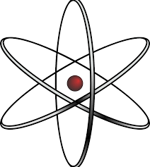

El núcleo del átomo contiene protones y neutrones
En el centro del átomo hay una zona muy densa y pequeña llamada núcleo atómico, donde se concentran los protones y neutrones. 
Aunque el núcleo ocupa un espacio muy reducido, en él se concentra casi toda la masa del átomo.
Los protones se repelen entre sí porque tienen carga positiva, pero los neutrones ayudan a mantener el núcleo unido gracias a una fuerza llamada fuerza nuclear fuerte,
una de las más poderosas de la naturaleza.
para mas informacion ir a Atoms estudios
Cuando esto pasa, el átomo puede volverse radiactivo y emitir energía para estabilizarse.
El núcleo no cambia fácilmente, y por eso las reacciones químicas no lo afectan.
Pero si se rompe o divide, se puede liberar una enorme cantidad de energía, como sucede en las reacciones nucleares.